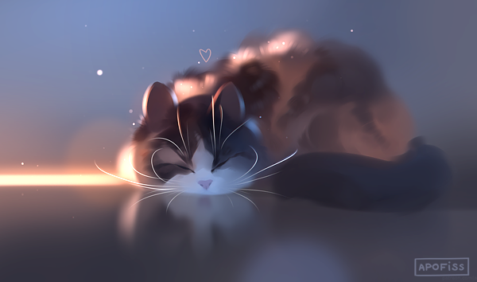

Grace's Home Page

This is a digital art piece of a cat created by Apofiss, an experienced digital artist
On a typical day I enjoy drawing and working on AP art projects. When there is cooler weather I try to go for a walk through the woods and explore the trails. There are some very beautiful waterfalls along the path that I take pictures of and like to meditate by. I enjoy doing anything in my day that is creative and artistic in mind, my favorite hobbies are drawing, sewing, reading, and practicing new skills I pick up.
When I graduate high school I'd like to apply to a small, rural college surrounded by the woods. I'll major in social work and minor in psychology and art, and try to make friends while there. At some point I'll study abroad in the United Kingdoms for a semester or so, and then come back to the states in order to finish my degree. After graduating college I'll become a social worker, and try to remove kids from abusive households or at least create a healthy home environment for them. Typically social workers burn out after a few years so I'll return to college and earn my degree to become a therapist.
Favorite Place
Favorite movie